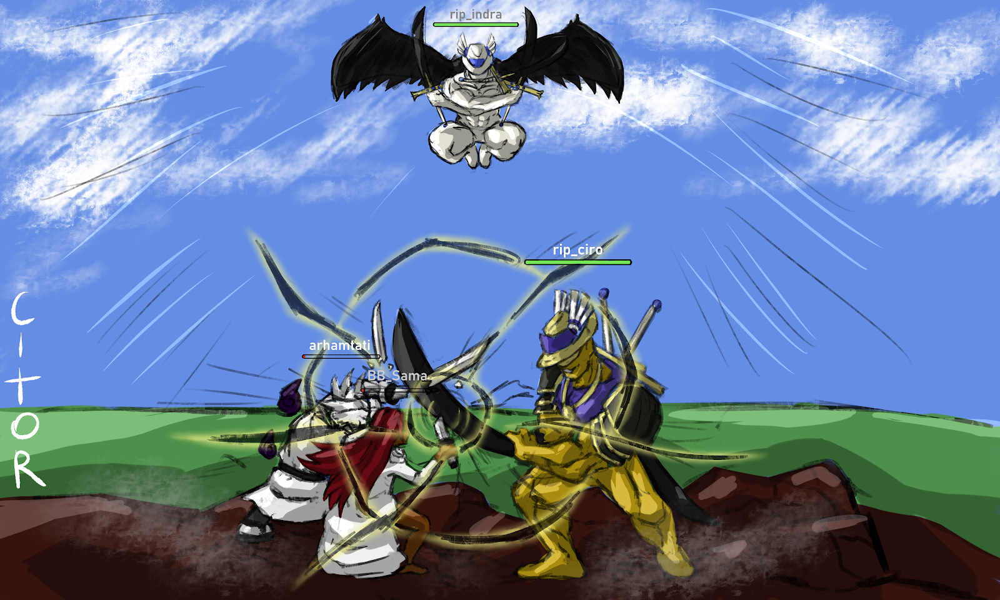

The Lore of Blox Fruits
The Battle between the Admins: The Liberation of the New World
After decades of fear under the tyrannical rule of the infamous TOAD ARMY together with the GOL D SAMA DOGS, the land was finally liberated by the arrival of a foreign group of pirates named MUGHAL Pirates along with RIP_INDRA Pirates; who are a wealthy group owning most of the land back in the first sea.
Following their arrival, MUGHAL Pirates were confronted by GOL D SAMA DOGS goons, whom bystanders claim had their swords cut in half by a single slash of the pirate named rip_ciro, who had turned his arm into a giant blade; eventually unfolding in a big battle between MUGHAL Pirates and GOL D SAMA Dogs.
The damage done to GOL D SAMA's crew was big enough to make him come out of his lair also known as the "Dog House", so he could aid his fellow crew members.
Upon his leave, King Wenlocktoad chose to aid GOL D SAMA by sending his crew to assist in the capture of MUGHAL Pirates, leaving King Wenlocktoad vulnerable in his cave.
During this event, rip_indra and mygame43 invaded King Wenlocktoad's cave, ready to end his tyrannical reign as rip_indra immobilized every guard in the room.
With what seemed like just his aura, Wenlocktoad fell from his throne powerless and afraid, begging rip_indra for mercy. Rip_indra knocked the crown off his head as a way to say he was not King Wenlocktoad anymore, but simply Toad.
However, as the crown hit the ground, it suddenly got pulled back onto Wenlocktoad's head like some sort of parasite. It was when they realized that Wenlocktoad was under the control of his crown; and as an act of mercy, instead of ending his life, rip_indra sealed Wenlocktoad into the Dog House that once belonged to GOL D SAMA.
As the battle of TOAD ARMY alongside GOL D SAMA against MUGHAL Pirates was unfolding, rip_ciro spotted GOL D SAMA himself amongst the field swinging what appeared to be a mere copy of the legendary Triple Dark Blade.
Feeling insulted by the likes of him wielding a worthless fake of his weapon, rip_ciro unsheathed his True Triple Dark Blade sending a single slice that cut the ground in half, swiftly turning TOAD ARMY and GOL D SAMA into dust and ending the battle.
Meanwhile, rip_indra with his right hand and butler, mygame43, arrived at the cafe to tell the news of Toad's seal, thus ending the reign of tyranny over the New World.
